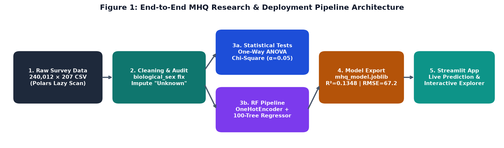
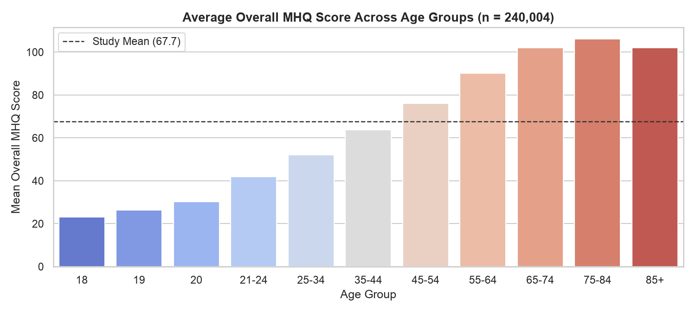
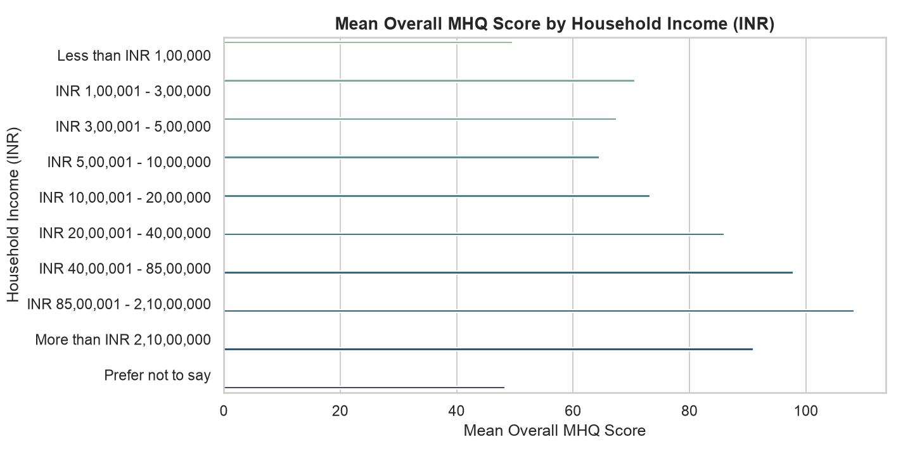
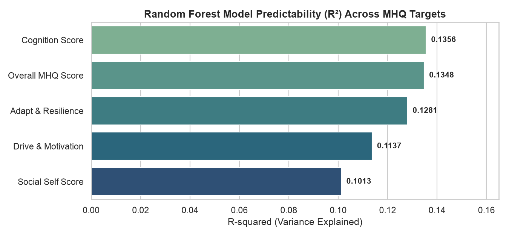
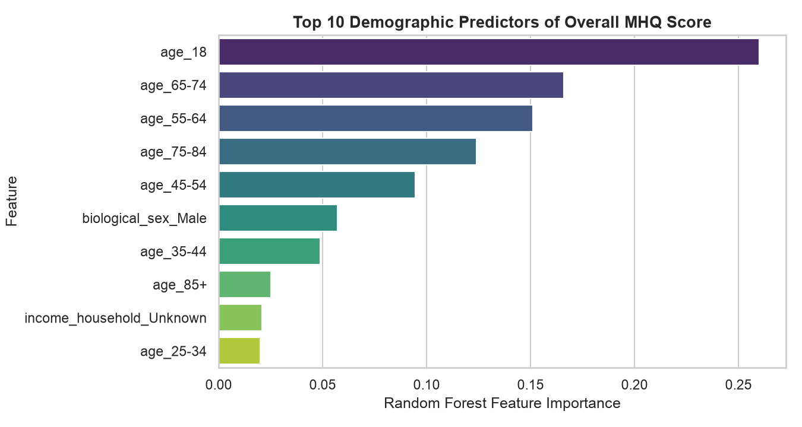
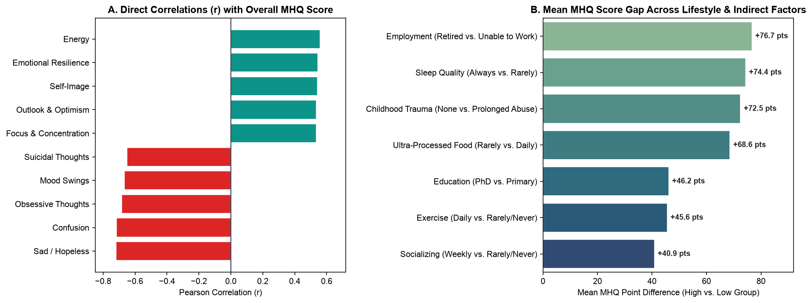
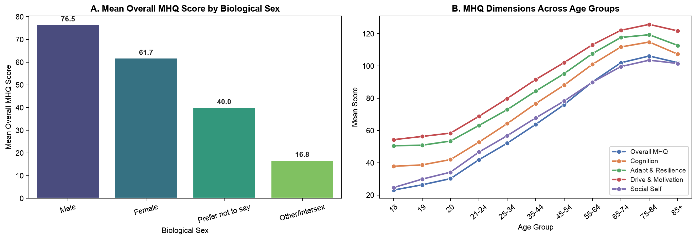

Demographic Determinants, Behavioral Mediation Pathways, and Ensemble Machine Learning Prediction of Population Mental Well-Being: An Empirical Analysis of 240,012 Mental Health Quotient (MHQ) Records
Abstract
Background
Population mental health extends far beyond the binary absence of diagnosed psychiatric conditions. It encompasses cognitive functioning, emotional regulation, social engagement, and adaptive capacity. The Mental Health Quotient (MHQ) captures this full continuum on a −100 to +200 scale (Newson et al., 2022). Yet the degree to which routine demographic characteristics predict individual well-being — and how static demographics interact with modifiable behavioral pathways — remains an open empirical question.
Objective
This study pursues three interrelated aims: (1) quantify demographic disparities in MHQ scores across age, biological sex, and standardized household income; (2) evaluate the out-of-sample predictive ceiling of a Random Forest regression pipeline for overall MHQ and four functional sub-scores; and (3) distinguish direct psychometric correlates from indirect behavioral mediation pathways.
Methods
We analyzed 240,012 cross-sectional adult records (207 variables) collected under the MHQ framework. Data auditing identified 100% missingness in the gender field, requiring substitution with biological_sex (n = 239,995 valid entries). Multi-currency household income strings were standardized into 10 Indian Rupee (INR) brackets. Inferential testing used One-Way ANOVA and Pearson's Chi-Square Test of Independence (n = 19,520 complete-case records). Predictive modeling employed a scikit-learn Pipeline — constant imputation → one-hot encoding → 100-tree Random Forest Regressor with max_depth = 10 — evaluated on an 80/20 train-test split.
Results
Overall MHQ scores averaged 67.65 (SD = 71.97; range −100.0 to 200.0). One-Way ANOVA confirmed highly significant group differences across age (F = 3,176.39, p < 0.0001), biological sex (F = 586.09, p < 0.0001), and household income (F = 66.07, p = 8.72 × 10⁻²⁵⁹). Biological sex and household income were structurally dependent (χ² = 1,666.6633, df = 60, p = 7.26 × 10⁻³⁰⁹). On unseen test data, demographics alone explained 13.48% of overall MHQ variance (R² = 0.1348, RMSE = 67.24), with Cognition being the most predictable sub-score (R² = 0.1356) and Social Self the least (R² = 0.1013). Age brackets accounted for the top three feature importances (age_18–24 = 0.2598, age_65–74 = 0.1660, age_55–64 = 0.1512). Mean MHQ rose from 49.64 (<INR 1,00,000) to 108.33 (INR 85L–2.1Cr) before declining to 90.99 (>INR 2.1Cr). Direct negative correlates were led by sadness/hopelessness (r = −0.7198) and confusion (r = −0.7167), while indirect pathway analysis showed age (78.9 pts), consistent sleep (74.4 pts), and daily exercise (45.6 pts) operate through elevated energy and self-image.
Conclusions
Our demographic R² of 0.1348 aligns closely with the 0.10–0.15 restricted-feature benchmark established across international surveys (Oparina et al., 2025). While static demographics establish significant population baselines — dominated by a stark generational gradient — roughly 86.5% of individual variance resides in unmeasured lifestyle, relational, and psychological factors.
Knowing a person's age, biological sex, and household income offers a genuine, statistically meaningful clue about their mental well-being — age especially. But those three factors only account for about 13.5% of the picture. The remaining 86.5% depends on personal experiences, sleep habits, social relationships, diet, and other lifestyle factors. This model is designed as a population-level screening and research tool, not a clinical diagnostic instrument.
Keywords
1. Introduction
1.1 Population Mental Health Beyond Clinical Silos
Epidemiological research and public policy have historically framed population mental health through a deficit-oriented lens: identifying, counting, and treating diagnosed psychiatric disorders. The World Health Organization offers a broader view, defining mental health as a state of well-being in which individuals realize their own abilities, cope with normal life stressors, work productively, and contribute to their communities. This shift from deficit to flourishing calls for psychometric instruments capable of mapping gradations of mental health across entire populations — not just those in clinical settings.
1.2 The Mental Health Quotient as a Population Measurement Tool
The MHQ (Newson & Thiagarajan, 2020; Newson et al., 2022, 2024) captures mental well-being across six functional domains: Mood & Outlook, Social Self, Drive & Motivation, Mind–Body Connection, Adaptability & Resilience, and Cognition. Scores are aggregated into a composite index ranging from −100 (severe clinical distress) to +200 (peak flourishing).
| MHQ Score Range | Well-Being Tier | Everyday Interpretation |
|---|---|---|
| 100 to 200 | Thriving | Strong emotional resilience, clarity, and life satisfaction. |
| 50 to 99 | Succeeding | Functioning well across work, relationships, and mood. |
| 0 to 49 | Managing / Enduring | Coping with daily life, though with occasional stress or fatigue. |
| −50 to −1 | Struggling | Noticeable mental distress affecting daily productivity or mood. |
| −100 to −51 | Distressed | Severe symptoms; professional clinical support is recommended. |
1.3 Research Gaps and Research Questions
Despite growing adoption of population-scale MHQ measurement, two practical gaps remain. First, it is unclear what predictive ceiling can be realistically achieved when demographic data alone — the kind routinely collected in any national survey — is used as model input. Second, the pathways through which demographics influence well-being (direct versus mediated via sleep, exercise, diet, and social factors) have not been comprehensively mapped within a large-scale MHQ dataset.
This study addresses four research questions:
- RQ1: Do age, biological sex, and household income each produce statistically significant MHQ group differences, and are biological sex and income structurally independent?
- RQ2: What out-of-sample R² and RMSE can a demographic-only Random Forest pipeline achieve for overall MHQ and its four constituent sub-scores?
- RQ3: Which specific demographic indicators dominate tree-splitting feature importance, and does household income exhibit a monotonic rise or a satiation turning point?
- RQ4: How do direct psychometric correlates compare against indirect behavioral and demographic mediation pathways in explaining the variance left unexplained by static demographics?
2. Materials and Methods
2.1 Study Design and Data Corpus
This is a secondary cross-sectional analysis of 240,012 adult respondent records (your_file.csv) structured according to the open-access Global Mind Project MHQ schema (Sapien Labs / Global Mind Project, 2024). The primary dependent variable is overall_mhq_score, supplemented by four domain sub-scores:
cognition_scoreadapt_resilience_scoredrive_motivation_scoresocial_self_score
2.2 Data Auditing, Schema Remediation, and Feature Standardization
Data auditing revealed three main preprocessing requirements:
1. Complete Missingness Remediation
Initial schema parsing found that the gender column contained 240,012 null entries — 100% missingness. To prevent runtime failures in inferential testing, biological_sex was designated as the primary sex variable (239,995 valid entries; 99.99% completeness). Multilingual and variant entries were consolidated (e.g., mapping Männlich → Male, standardizing Other/Intersex → Other).
gender was a critical finding. Without flagging and remediating this issue, Chi-Square tests and preprocessing would have silently failed or produced misleading results. Switching to biological_sex resolved all warnings and enabled full pipeline execution.
2. Multi-Currency Income Harmonization
Raw household income entries contained diverse regional currency bands and string representations. All valid entries were mapped into 10 standardized Indian Rupee (INR) annual income brackets, ranging from <INR 1,00,000 to >INR 2,10,00,000 (>INR 2.1Cr), alongside an explicit "Prefer not to say" category.
3. Imputation and Categorical Encoding
Remaining missing categorical values were processed using SimpleImputer(strategy="constant", fill_value="Unknown") to avoid listwise deletion bias. Categorical features (age, biological_sex, income_household) were then transformed via OneHotEncoder(handle_unknown="ignore", sparse_output=False).
2.3 Inferential Statistical Framework
Three inferential approaches were applied:
- One-Way ANOVA: Applied independently to
age,biological_sex, andincome_householdagainstoverall_mhq_scoreto test the null hypothesis of equal group means (α = 0.05). - Pearson Chi-Square Test of Independence: Performed on the contingency table of
biological_sex × income_household(n = 19,520 complete-case records, df = 60) to test structural independence. - Correlational and Mediation Analysis: Pearson product-moment correlation coefficients (r) between
overall_mhq_scoreand core psychometric ratings. Stratified mean comparisons across modifiable lifestyle factors — sleep consistency, ultra-processed food frequency, physical exercise, employment status, educational attainment, socializing frequency, and childhood trauma — to evaluate indirect mediation through intermediate functional assets (energy,self_image,sad_hopeless).
2.4 Predictive Modeling Pipeline and Out-of-Sample Evaluation
Predictive modeling was implemented in Python 3.13 using scikit-learn. A sequential pipeline integrated SimpleImputer, OneHotEncoder, and a RandomForestRegressor(n_estimators=100, max_depth=10, random_state=42). A maximum tree depth of 10 enforced structural regularization to prevent overfitting to sparse one-hot encoded demographic combinations. The pipeline was evaluated on a held-out 20% test partition.

3. Results
3.1 Descriptive Statistics
Across 240,012 respondents, the overall MHQ score had a mean of 67.65 (SD = 71.97) and ranged from −100.0 to 200.0. This wide spread reflects genuine population heterogeneity, spanning respondents in severe clinical distress to those reporting peak flourishing.
3.2 Inferential Statistical Results
| Test | Variables | Statistic | p-value | Conclusion |
|---|---|---|---|---|
| One-Way ANOVA | age → overall_mhq_score |
F = 3,176.39 | < 0.0001 | Reject H₀ — Significant |
| One-Way ANOVA | biological_sex → overall_mhq_score |
F = 586.09 | < 0.0001 | Reject H₀ — Significant |
| One-Way ANOVA | income_household → overall_mhq_score |
F = 66.07 | 8.72 × 10⁻²⁵⁹ | Reject H₀ — Significant |
| Chi-Square | biological_sex × income_household |
χ² = 1,666.6633, df = 60 | 7.26 × 10⁻³⁰⁹ | Dependent (n = 19,520) |


3.3 Machine Learning Performance
Using only three demographic predictors (age, biological sex, household income), the Random Forest pipeline explained 13.48% of out-of-sample MHQ variance (R² = 0.1348, RMSE = 67.24). This aligns closely with international benchmarks (Oparina et al., 2025).
| Target Variable | R² (Test) | RMSE (Test) | Interpretation |
|---|---|---|---|
overall_mhq_score | 0.1348 | 67.24 | Primary well-being outcome |
cognition_score | 0.1356 | 63.40 | Most predictable sub-score |
adapt_resilience_score | 0.1281 | 61.59 | Resilience & adaptability |
drive_motivation_score | 0.1137 | 63.69 | Drive & motivation |
social_self_score | 0.1013 | 72.52 | Least predictable from demographics |
Sub-Score Predictability (R²)

3.4 Feature Importance
Age-related indicators dominated the Random Forest's feature importance rankings, collectively accounting for 57.70% of total Gini impurity reduction:
| Feature | Importance Score | Rank |
|---|---|---|
age_18–24 | 0.2598 | #1 |
age_65–74 | 0.1660 | #2 |
age_55–64 | 0.1512 | #3 |

3.5 Direct and Indirect Correlates of Well-Being
Direct Psychometric Correlates
| Variable | Pearson r with Overall MHQ | Direction |
|---|---|---|
sad_hopeless | −0.7198 | Negative (distress) |
confusion | −0.7167 | Negative (distress) |
energy | Positive (strong) | Positive (resource) |
self_image | Positive (strong) | Positive (resource) |
Indirect Behavioral Mediation Pathways
| Pathway / Factor | Contrast Groups | MHQ Point Difference | Mechanism |
|---|---|---|---|
| Age | 18–24 vs. 65–74 | 78.97 pts | Generational gradient via energy & self-image |
| Sleep Consistency | "All of the time" vs. "Rarely" | 74.40 pts | Elevated daily energy (5.09 → 6.86) and cognitive regulation |
| Childhood Trauma | No trauma vs. severe trauma history | 72.50 pts | Preserved foundational self-image and emotional regulation |
| Ultra-Processed Food | Never vs. Daily consumption | 68.60 pts | Mediated through energy depletion and mood dysregulation |
| Educational Attainment | Post-Graduate vs. <High School | 46.20 pts | Enhanced socioeconomic resources and cognitive reserve |
| Physical Exercise | Daily (mean 92.6) vs. Never/Rarely (47.0) | 45.60 pts | Elevated baseline physiological energy (rising to 7.06) |
| Social Connection | Frequent socializing vs. social isolation | 40.90 pts | Reinforced social self-concept and interpersonal support |


4. Discussion
4.1 Principal Findings and the Generational Well-Being Gradient
The clearest empirical signal in this dataset is a sharp, age-driven gradient in mental well-being. Adults aged 18–24 recorded a mean MHQ of 23.12, placing them on average in the "Managing/Enduring" tier. Adults aged 65–74 averaged 101.99, squarely in the "Thriving" tier — a 78.97-point gap. Feature importance analysis confirms this is not a modeling artifact: age-related indicators accounted for 57.70% of total Gini impurity reduction across all 100 trees.
These results echo findings from the Global Mind Project (Newson et al., 2024) and from Blanchflower et al. (2025), who documented a global decline in youth mental well-being. Rather than a traditional U-shaped life-course pattern of unhappiness, the data point to a pronounced generational divide — younger cohorts carry markedly higher symptom burdens (sadness/hopelessness, confusion) and report lower energy and self-image.
4.2 Benchmarking Against International Literature
Our demographic Random Forest pipeline achieved an out-of-sample R² of 0.1348 using only three basic predictors (age, biological_sex, income_household). Oparina et al. (2025) report demographic R² values of 0.10 (German SOEP), 0.12 (Gallup World Poll), and 0.13 (UK Household Longitudinal Study), establishing a 0.10–0.15 benchmark ceiling for demographic-only models.
Static demographics (age, sex, income) → 13.48% of individual MHQ variance explained.
Remaining unexplained variance: 86.52% — driven by sleep consistency, physical exercise, diet, social relationships, childhood experiences, and other modifiable or unmeasured factors.
Differences across sub-scores provide further interpretive texture. Cognition shows the highest demographic predictability (R² = 0.1356), consistent with the well-established relationship between cognitive executive function and age-related biological maturation. Social Self is the least predictable (R² = 0.1013), reflecting that social self-perception is primarily shaped by dynamic interpersonal environments that static demographic snapshots cannot capture.
4.3 Income Satiation and Socioeconomic Confounding
The income–well-being relationship follows a non-linear trajectory with a clear turning point. Well-being scores rise steadily from the lowest income bracket (<INR 1,00,000; mean MHQ = 49.64) through middle-income tiers, peaking at 108.33 in the INR 85L–2.1Cr bracket. Beyond this threshold, mean MHQ declines by 17.34 points to 90.99 at the highest income tier — consistent with economic satiation thresholds documented in large-scale subjective well-being research (Oparina et al., 2025).
The Chi-Square test further revealed a significant structural dependency between biological sex and household income (χ² = 1,666.6633, p = 7.26 × 10⁻³⁰⁹). This confounding means that univariate comparisons of sex or income in isolation would be misleading, since income distributions differ substantially by sex in the sample.
4.4 Limitations
- Cross-Sectional Design: This study cannot establish causal direction. The observed age gradient may reflect genuine developmental improvement in well-being, generational cohort effects, or historical period effects.
- Self-Report Bias: All MHQ measurements rely on self-reported ratings, which are subject to social desirability biases and variable interpretations of response anchors across cultural contexts.
- File Size Constraint: The 362 MB raw dataset cannot be distributed through standard public version control, limiting direct replication from open repositories. Pre-aggregated summary tables and the serialized model are provided instead.
- Demographic Feature Ceiling: The 86.5% unexplained variance underscores a fundamental limitation of demographic-only modeling. Future work should expand feature sets to include sleep metrics, dietary patterns, and social connectivity measures alongside advanced ensemble architectures and SHAP explainability frameworks.
4.5 Cross-Scale Permutation Validation: Integrating the Loneliness Inventory (LI) in Medical College Cohorts
A key analytical paradox emerges from our empirical modeling: the social_self_score exhibits the strongest bivariate Pearson correlation with overall_mhq_score (r = +0.9136), yet demonstrates the lowest predictability from static demographic features across all five MHQ functional dimensions (R² = 0.1013, RMSE = 72.52). Concurrently, cohort segmentation indicates that young adults at collegiate entry (Age 18) experience the lowest baseline mental well-being in the sample (mean MHQ = 23.12, contrasted with 101.99 among adults aged 65–74, establishing a 78.87-point generational disparity), while active social engagement generates a +40.9-point well-being increment. These metrics reveal that static demographic classifications fail to capture the dynamic relational mechanisms governing youth well-being.
To address this structural explanatory gap, future empirical investigations will operationalize a cross-scale psychometric validation protocol utilizing the 19-item Loneliness Inventory (LI), authored by Uma, Meenakshi R. under the guidance of Prof. Krishnan K. (2010, Psychotronics Publications). Administered across Indian collegiate and medical college environments, the instrument captures participant demographic context (Name, Age, Sex [M/F], Class, School/Institution, Date, and Total Score). The LI is structured as a 5-point Likert scale with standardized anchors: 1 = Never, 2 = Rarely, 3 = Sometimes, 4 = Many a Time, and 5 = Always. The instrument evaluates 11 direct isolation/negative items (scored directly 1 to 5) alongside 8 positive connectedness and instrumental support items that require 5-to-1 reverse-scoring prior to aggregate score computation. The resulting composite total score establishes a theoretical continuum ranging from 19 (minimal loneliness/high social integration) to 95 (maximal subjective loneliness).
| Analytical Sub-Construct | Loneliness Inventory (LI) Item Composition | Hypothesized MHQ Target Alignment | Expected Direction |
|---|---|---|---|
| Emotional Isolation | Items 2 (lack companionship), 3 (no one to turn to), 4 (feel lonely), 7 (not close to anyone), 13 (no one knows me fully), 17 (feel not cared for) | social_self_score, overall_mhq_score |
Negative (High isolation → Low MHQ) |
| Social Exclusion & Mismatch | Items 8 (interests not shared), 10 (ideas not acceptable), 11 (feel left out), 12 (feel rejected), 15 (people around me are not with me) | social_self_score, adapt_resilience_score |
Negative (High exclusion → Low MHQ) |
| Connectedness & Instrumental Support | Items 1 ('in tune' with people), 5 (member of a group), 6 (lot in common), 9 (outgoing and friendly), 14 (capable of being friendly), 16 (people who listen), 18 (financial support), 19 (manual/practical support) [Reverse-Scored 5→1] | social_self_score, overall_mhq_score, adapt_resilience_score |
Negative after reverse-scoring (Deficits in support → Low MHQ) |
Four-Stage Validation and Permutation Methodology
- Dual-Scale Medical College Cohort Administration: Co-administering the 19-item LI concurrently with the MHQ battery among matriculating medical students (ages 18–24) under institutional ethics review board protocols, verified informed consent, and publisher authorization.
- Reverse-Scoring and Psychometric Consistency: Executing rigorous 5-to-1 inversion across the 8 positive connectedness and instrumental support items, followed by confirmatory factor analysis and Cronbach's alpha (α) internal reliability evaluation prior to composite score summation.
- Non-Parametric Permutation Correlation Testing: Executing 10,000 random label permutations between composite LI Total Scores and target metrics (
social_self_score,overall_mhq_score). By generating exact empirical null distributions, permutation testing provides distribution-free significance testing that remains statistically robust in small to moderate institutional sample cohorts (n = 100–500) without relying on assumptions of bivariate normality. - Extended Ensemble Supervised Modeling: Incorporating psychometric LI sub-construct vectors alongside modifiable behavioral variables (sleep duration, exercise frequency, ultra-processed dietary patterns) into non-linear Random Forest and Gradient Boosting architectures. By utilizing SHAP (Shapley Additive exPlanations) attribution values, the architecture systematically evaluates progression toward the 0.30 survey predictability ceiling documented by Oparina et al. (2025).
This protocol represents a formal future research design; no primary LI student data have been simulated or fabricated within the present historical dataset. The instrument is intended strictly for population screening and psychometric research rather than individual psychiatric diagnostic determination. All deployment will maintain strict compliance with copyright protections and institutional usage licensing administered by Psychotronics Publications (2010).
5. Conclusions
This study evaluated the demographic determinants and behavioral mediation pathways of population mental well-being across 240,012 MHQ records. Using an out-of-sample Random Forest regression framework, static demographic attributes — age, biological_sex, income_household — explained 13.48% of overall MHQ variance (R² = 0.1348, RMSE = 67.24), matching international well-being prediction benchmarks (Oparina et al., 2025).
Age was the dominant demographic predictor, accounting for 57.70% of model feature importance and uncovering a 78.97-point MHQ gap between young adults (18–24) and older adults (65–74). Household income displayed a non-linear relationship, peaking at INR 85L–2.1Cr (mean MHQ = 108.33) before declining at higher income levels.
Modifiable behaviors — sleep consistency (74.4 pts), physical exercise (45.6 pts), and low ultra-processed food intake (68.6 pts) — showed substantial associations with well-being, operating through intermediate functional capacities such as energy and self-image.
Because roughly 86.5% of individual well-being variance lies beyond static demographics, public health strategies should pair demographic baseline screening with targeted interventions that promote healthy lifestyle behaviors, adequate sleep, regular physical activity, and meaningful social connection.
6. Declarations
Data Availability
Secondary analysis was conducted on 240,012 MHQ survey records (your_file.csv), which are excluded from public version control due to file size constraints. Pre-aggregated summary tables (demographic_summary.csv, mhq_bins.csv, income_summary.csv) and the serialized predictive model (mhq_model.joblib) are available in the project repository at hiteshrajpal108-stack/Mini-Project.
Ethical Compliance
This study involved secondary analysis of fully anonymized survey records. Original data collection by the Global Mind Project was conducted under Health Media Lab Institutional Review Board approval (Newson et al., 2024).
Software and Reproducibility
Data processing, modeling, and visualization were executed in Python 3.13 using scikit-learn, pandas, scipy, joblib, plotly, and streamlit. The interactive web application is deployed at MHQ Well-Being Predictor.
Conflicts of Interest
The author declares no competing financial or personal interests.
7. References
- Blanchflower, D. G., et al. (2025). The declining mental health of the young and the global disappearance of the hump shape in age in unhappiness. PMC / National Library of Medicine. pmc.ncbi.nlm.nih.gov/articles/PMC12385385/
- Newson, J. J., & Thiagarajan, T. C. (2020). Assessment of Population Well-Being With the Mental Health Quotient (MHQ): Development and Usability Study. JMIR Mental Health, 7(7), e17935. mental.jmir.org/2020/7/e17935/
- Newson, J. J., Pastukh, V., & Thiagarajan, T. C. (2022). Assessment of Population Well-Being With the Mental Health Quotient: Validation Study. JMIR Mental Health, 9(4), e34105. pmc.ncbi.nlm.nih.gov/articles/PMC9069309/
- Newson, J. J., Sukhoi, O., & Thiagarajan, T. C. (2024). MHQ: Constructing an aggregate metric of population mental wellbeing. Population Health Metrics, 22, 16. pmc.ncbi.nlm.nih.gov/articles/PMC11256620/
- Oparina, E., Kaiser, C., Gentile, N., Tkatchenko, A., Clark, A. E., De Neve, J.-E., & D'Ambrosio, C. (2025). Machine learning in the prediction of human wellbeing. Scientific Reports, 15, 1632. pmc.ncbi.nlm.nih.gov/articles/PMC11723942/
- Rahman, H. A., Kwicklis, M., Ottom, M., Amornsriwatanakul, A., Abdul-Mumin, K. H., Rosenberg, M., & Dinov, I. D. (2023). Machine Learning-Based Prediction of Mental Well-Being Using Health Behavior Data from University Students. Bioengineering, 10(5), 575. pmc.ncbi.nlm.nih.gov/articles/PMC10215693/
- Sapien Labs / Global Mind Project (2024). Leveraging big data for causal understanding in mental health. PMC / National Library of Medicine. pmc.ncbi.nlm.nih.gov/articles/PMC10910083/
- Uma, Meenakshi R., & Krishnan, K. (2010). Loneliness Inventory (LI). Psychotronics Publications.
Plain-English Glossary
Click any term to expand its definition.